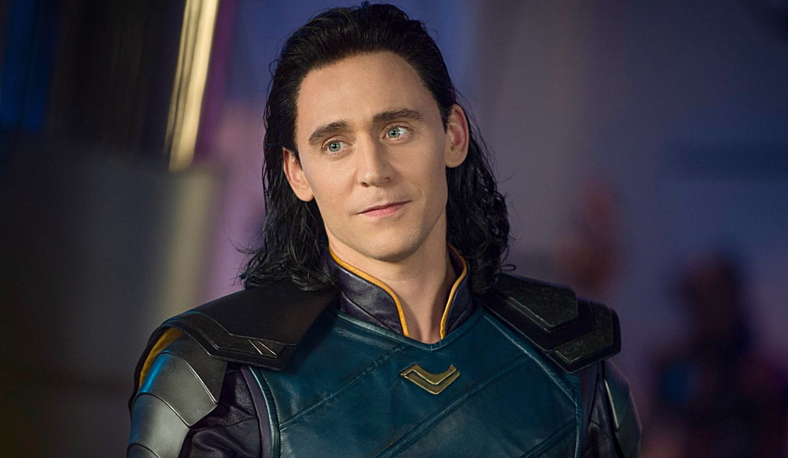
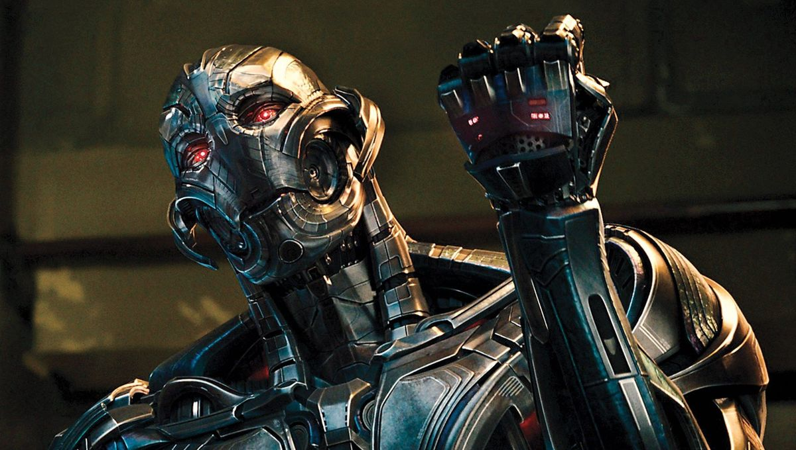
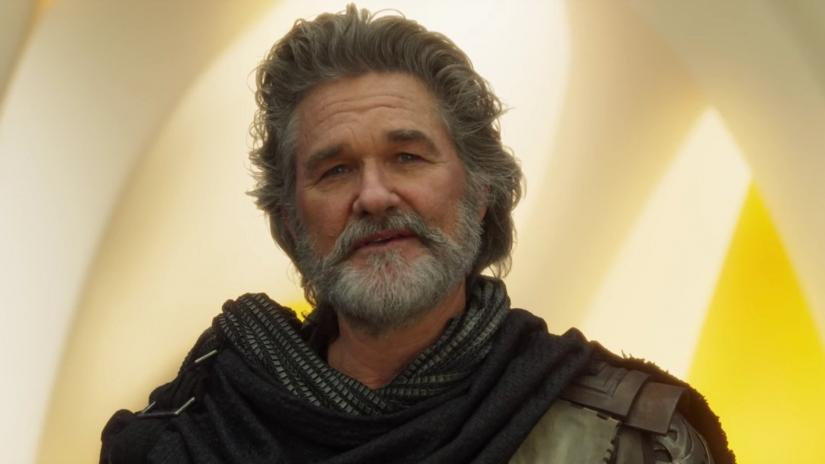

Thanos
Představitel: Josh Brolin
- známý také pod jmény „Šílený Titán“ nebo „Avatar smrti“, je jedním z největších a nebezpečnějších zloduchů z celého Marvelu
- Jeho cílem je posbírat všech šet "entit" kamenů nekonečna, s jejich pomocí by dokázal dosáhnout svého plánu
- a vyhubit tak polovinu všeho živého na zemi, nastolit tím rovnováhu a tím zabránit přelidnění

Loki
Představitel: Tom Hiddleston
- Loki je nevlastní bratr Thóra, je to syn ledových obrů z Jotenhaimu
- Loki se chce vždy vyrovnat Thórovi, nebo získat jeho uznání
- Ve filmech narozdíl od komiksů nevystupuje jako čistý záporák
- Loki se už po prvním Avengers filmu neměl objevit, ale pro velký úspěch dostal šanci znovu
- Ve filmech Loki umře celkem 3krát 2krát je oživen, naposledy umírá poté co mu Thanos zlomí vaz

Ultron
Představitel: James Spader
- Ultron je supersliný robot s geniálním intelektem
- Ve filmech je z části omylem vytvořen Tony Starkem a rozhodne se vyhladit lidstvo tím, že zvedne jedno z měst do vzduchu a to udělá tak silnou nárazovou vlnu, že by to mohlo znamenat i vyhlazení celkového života na zemi
- Měl několik těl, po zničení jednoho z nich prostě po síti přešel do dalšího

Planeta Ego
Představitel: Kurt Russell
- Ego je žijící planeta, která kvůli přežití musí expandovat, vlastně požírá cizí planety a bere energii z jádra
- Je to otec Star Lorda
- Vytvořil si vlastní tělo, aby mohl cestovat do ostatních galaxií
- Má schopnosti nebešťana, stejně jako Starlord, tedy jen pokud žije jejich planeta
- Ve filmu Guardians of the Galaxy Vol.2 mu je zničeno jádro a je tak poražen
